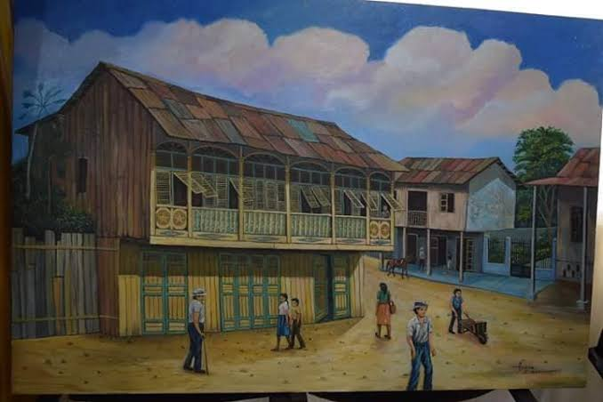
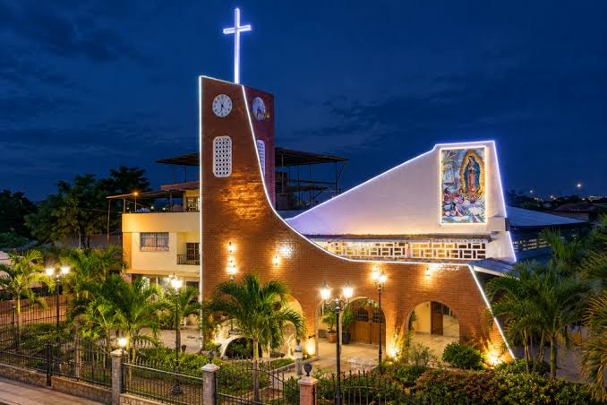
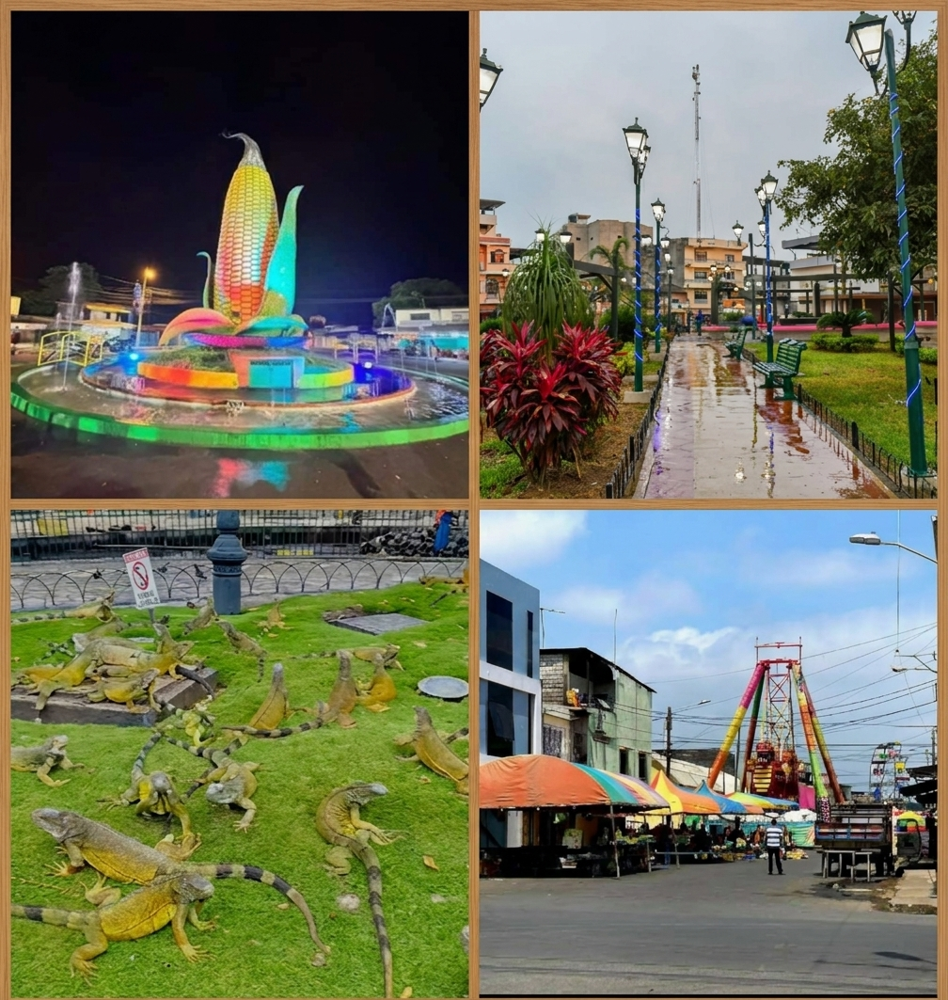
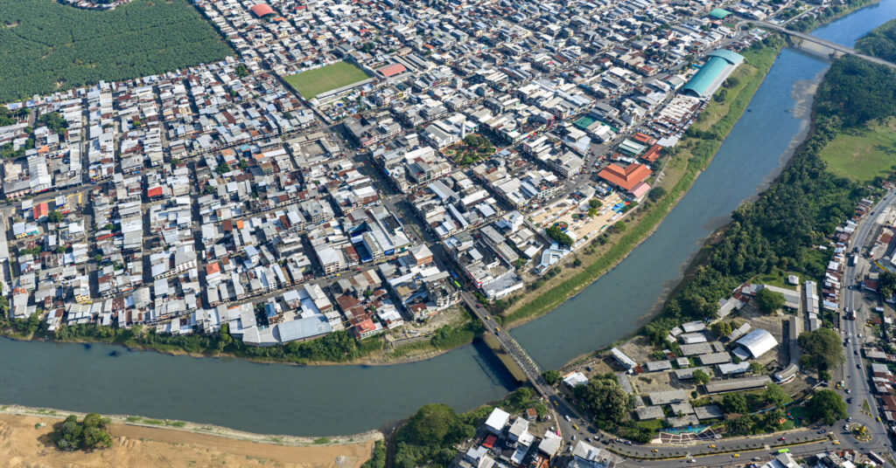

Gastronomía

La culinaria ventanense resalta por el uso del maíz y los productos del campo:
- Arroz con menestra
- Caldo de bola de verde
- encebollado
- Caldo de gallina con yuca
Bienvenido a la página oficial del cantón Ventanas. Una tierra sumamente fértil y alegre, destacada por su inmensa producción maicera, su comercio dinámico y sus hermosos paisajes a lo largo del río Ventanas.

Sus orígenes datan de la época colonial como un punto de descanso para comerciantes. Fue elevado a la categoría de cantón el 10 de noviembre de 1952, consolidándose rápidamente como un polo de desarrollo agrícola en la región.

El cantón cuenta con una organización territorial urbana y rural:
La culinaria ventanense resalta por el uso del maíz y los productos del campo:

Destacan el malecón a la orilla del río Ventanas, los balnearios de agua dulce muy concurridos en época invernal, y los extensos campos dorados de cultivo de maíz.
Dispone de hostales, hoteles y residencias que brindan comodidad a los comerciantes y turistas que visitan la ciudad durante todo el año.
Alcalde: Carlos Carriel

Alberga a más de 70.000 habitantes, caracterizándose por una población trabajadora, joven y profundamente arraigada a las labores agrícolas.
Se localiza en la región central de la provincia de Los Ríos, en la cuenca del río Ventanas, limitando con los cantones Babahoyo, Puebloviejo, Vinces y la provincia de Bolívar.